👾 Games and demos
Released Games
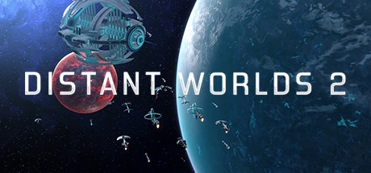
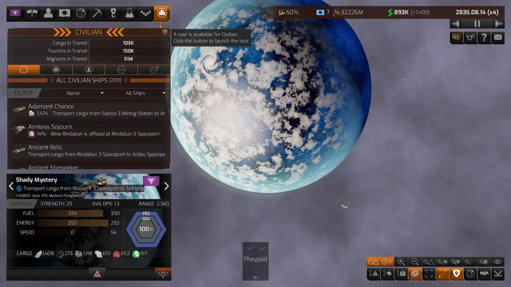
Distant Worlds 2
Grand-scale, pausable real-time 4X strategy game where you build and guide a vast space empire through exploration, diplomacy, research, trade, and war.
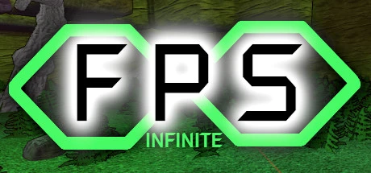
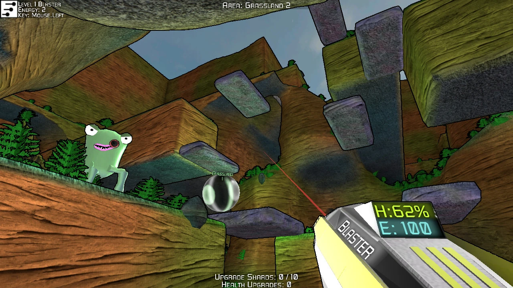
FPS Infinite
Procedural FPS with VR support. This is a full free game inspired by Metroid Prime: explore randomly generated worlds for new abilities to unlock new ones.


Snaaker Friends
What do you get if you cross Snake with Snooker, Pool, and Football? Multiplayer Snake-inspired game.
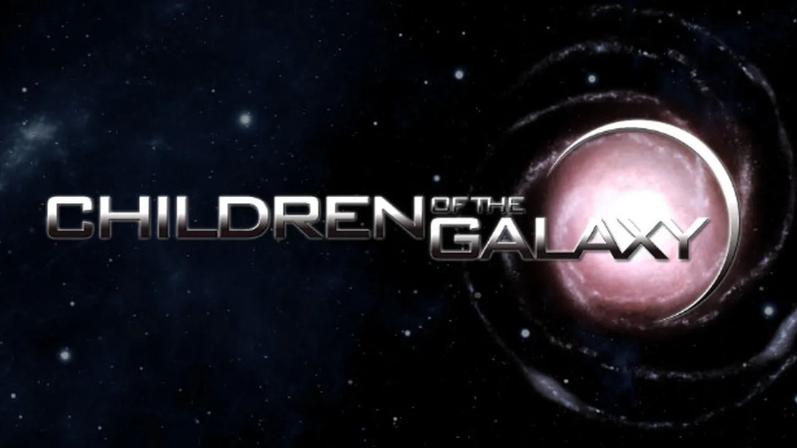
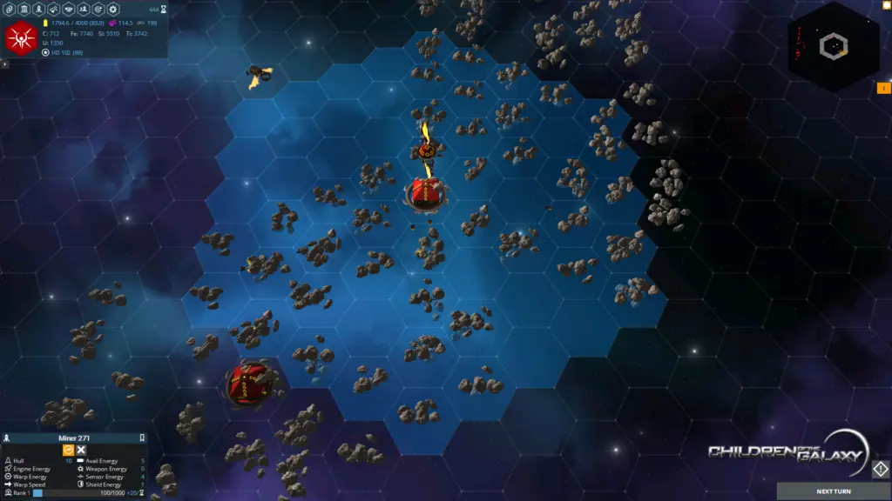
Children of Galaxy
Children of the Galaxy is a grand scale 4x turn-based strategy game with a turn-based combat and tactical elements.
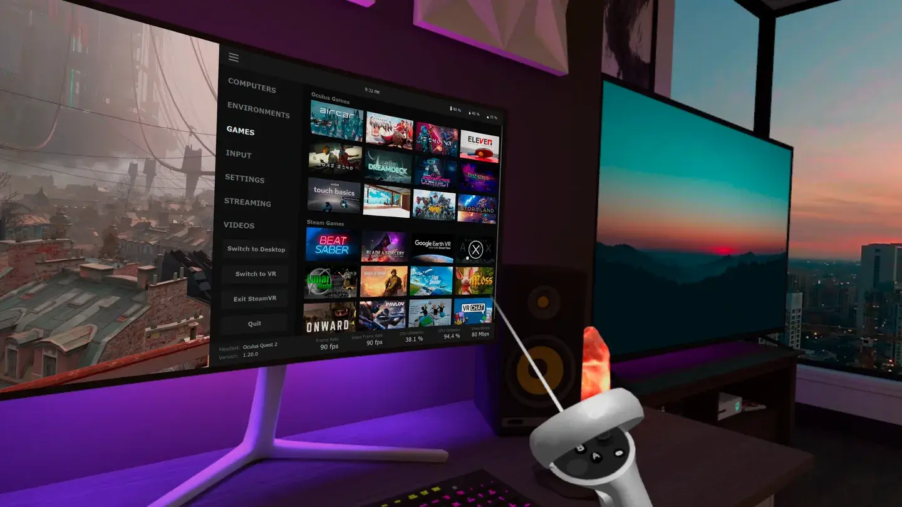
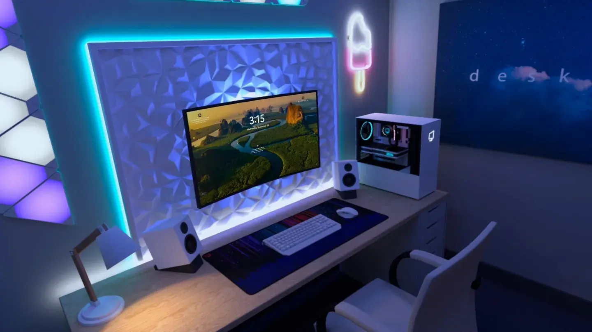
Virtual Desktop
VR desktop streaming app powered by Stride. Watch movies, browse the web or play games on a giant virtual screen.
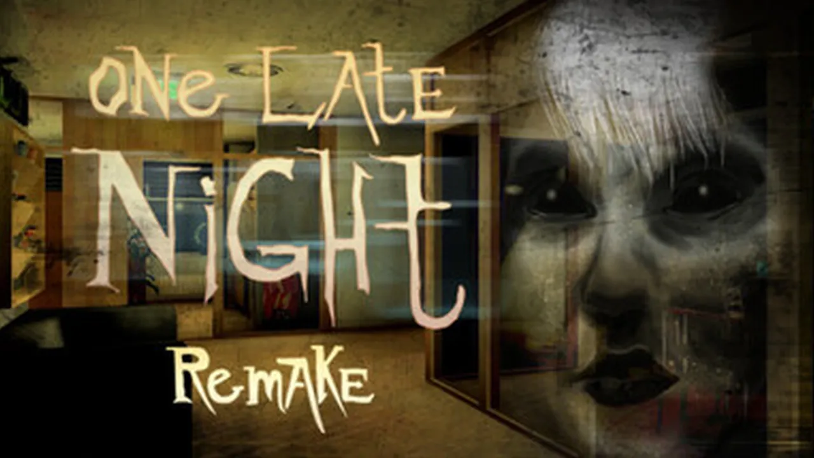
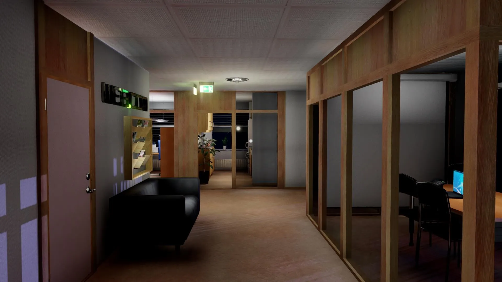
One Late Night: Remake
This game brings back the cult indie office-horror classic with modern visuals and controls, expanded story, and new scares 💀
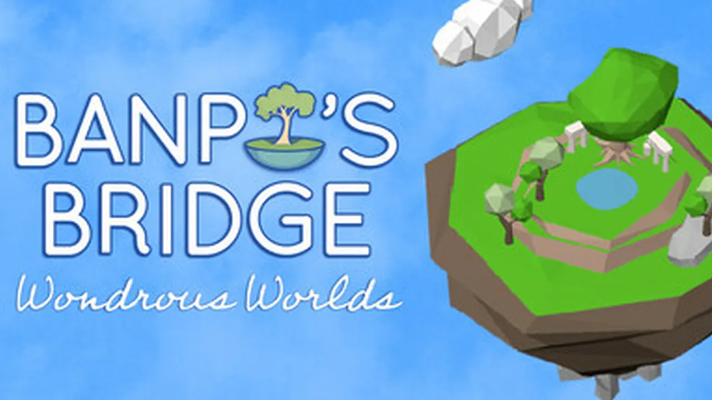
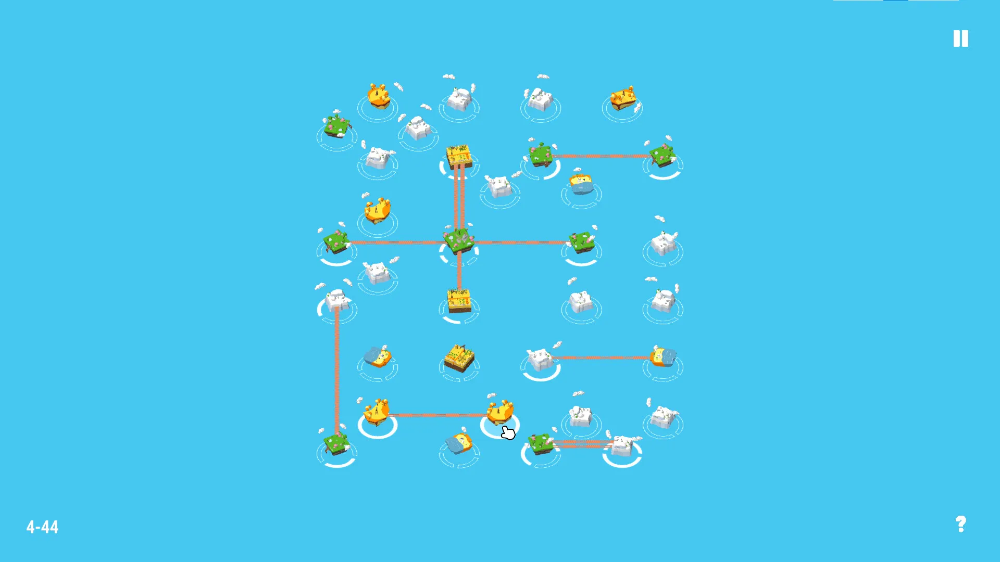
Banpo's Bridge Wondrous Worlds
Banpo's Bridge Wondrous Worlds is a reimagining of the classic Japanese puzzle genre, Hashiwokakero, or hashi
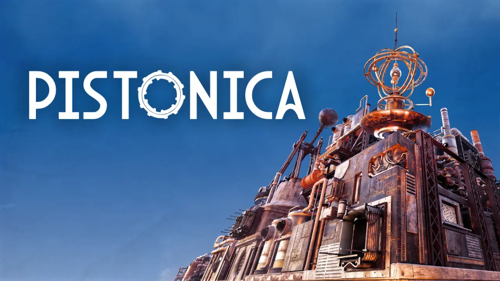
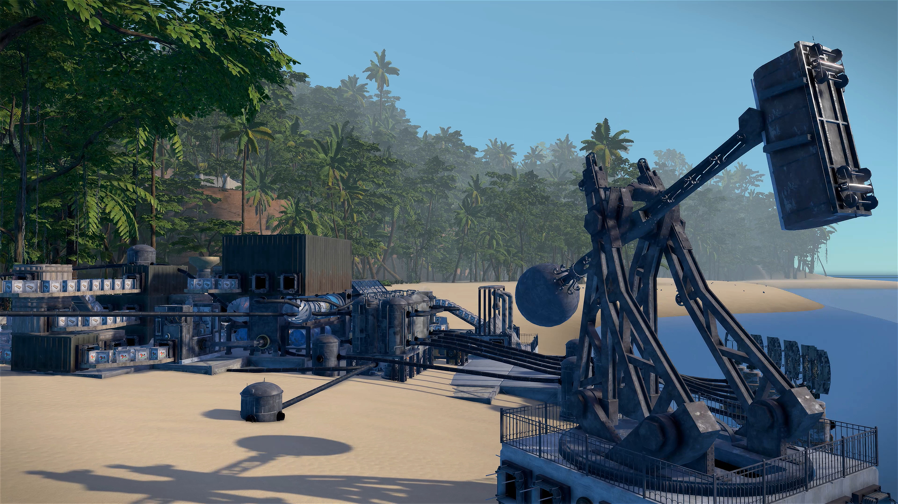
Pistonica
Pistonica invites you into a calm, open world where steam and machines meet. In this first-person steam automation game, you build and automate a refined factory, explore an island, research tech, and trade goods - all because of a strange radio signal.
Open-Source Games and Prototypes
- Starbreach - First/Third Person Shooter (official Stride demo)
- Rollerghoster - Race against online and local ghosts on procedural tracks by Aggror Jorn
- Rise of the Undeaf - Puzzle platformer
- Basic Platformer - Simple 3D platformer WIP
- Zerobot - Robot action game prototype
- BallsOfSteel - Pinball-style game
- Asteroids (Stride) - Asteroids clone in Stride
- Asteroids (community) - Another Asteroids clone
- Asteroids (Xenko) - Original Xenko-era Asteroids
- XenkoSpaceShooter - Space shooter prototype
- TurnBasedBattleSim - Turn-based battle simulator prototype
- Harrowing Flight - Student game project
- Flappy Bird - Flappy Bird clone with source code
- VVVVarkle - Dice game rendered with Stride via vvvv
- vvvv Showcase - Large-scale interactive media projects made with vvvv
Game Jams
- Step Up - Game jam entry by Marian Dziubiak and Youness Kafia
- Stopping the Rogue - Game jam entry by manio
- Once Upon a LAN - Multiplayer isometric arena brawler over LAN
- Dozer Dash - Ludum Dare 54 entry made with a code-only approach (source)
- Glasses - Global Game Jam 2019 entry
Videos
- Rescue Drone - August 2015 - Early Xenko engine showcase
- Xenko Procedural Terrain Generation & Water tests - Terrain and water demo
- Xenko 1.8 - Cel Shading - Cel shading demo
- VXGI demo in Xenko game engine - Voxel global illumination prototype
- Networking from Scythe of Luna - Multiplayer networking demo
- Data Sculpture for Herrenknecht rendered with Stride - Architectural data visualization